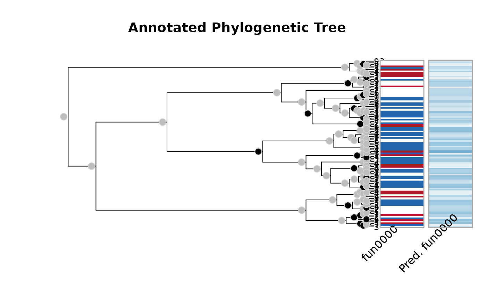

The function is a wrapper of stats::optim().
A model as specified in aphylo-model.
A vector of length 7 with initial parameters. In particular
psi[1], psi[2], mu[1], mu[2], eta[1], eta[2] and Pi.
Arguments passed to stats::optim().
A function to be used as prior for the model (see bprior).
Logical scalar. When TRUE the algorithm
stops with an error when the annotations are uninformative (either 0s or 1s).
Logical. When TRUE it will use a reduced peeling sequence
in which it drops unannotated leafs. If the model includes eta this is set
to FALSE.
An object of class aphylo_estimates.
The default starting parameters are described in APHYLO_PARAM_DEFAULT.
Other parameter estimation:
APHYLO_DEFAULT_MCMC_CONTROL
# Using simulated data ------------------------------------------------------
set.seed(19)
dat <- raphylo(100)
dat <- rdrop_annotations(dat, .4)
# Computing Estimating the parameters
ans <- aphylo_mle(dat ~ psi + mu_d + eta + Pi)
ans
#> Warning: NaNs produced
#>
#> ESTIMATION OF ANNOTATED PHYLOGENETIC TREE
#>
#> Call: aphylo_mle(model = dat ~ psi + mu_d + eta + Pi)
#> LogLik: -35.6771
#> Method used: L-BFGS-B (20 steps)
#> convergence: 0 (see ?optim)
#> # of Leafs: 100
#> # of Functions 1
#> # of Trees: 1
#>
#> Estimate Std. Err.
#> psi0 0.0000 NaN
#> psi1 0.0000 0.4375
#> mu_d0 1.0000 0.6516
#> mu_d1 0.4259 0.4224
#> eta0 1.0000 0.2357
#> eta1 1.0000 0.1543
#> Pi 1.0000 3.2408
#>
# Plotting the path
plot(ans)

# Computing Estimating the parameters Using Priors for all the parameters
mypriors <- function(params) {
dbeta(params, c(2, 2, 2, 2, 1, 10, 2), rep(10, 7))
}
ans_dbeta <- aphylo_mle(dat ~ psi + mu_d + eta + Pi, priors = mypriors)
ans_dbeta
#>
#> ESTIMATION OF ANNOTATED PHYLOGENETIC TREE
#>
#> Call: aphylo_mle(model = dat ~ psi + mu_d + eta + Pi, priors = mypriors)
#> LogLik (unnormalized): -50.2767
#> Method used: L-BFGS-B (29 steps)
#> convergence: 0 (see ?optim)
#> # of Leafs: 100
#> # of Functions 1
#> # of Trees: 1
#>
#> Estimate Std. Err.
#> psi0 0.1144 0.0896
#> psi1 0.0362 0.0371
#> mu_d0 0.1370 0.0554
#> mu_d1 0.0422 0.0288
#> eta0 0.6666 0.0907
#> eta1 0.8500 0.0461
#> Pi 0.0910 0.0868
#>